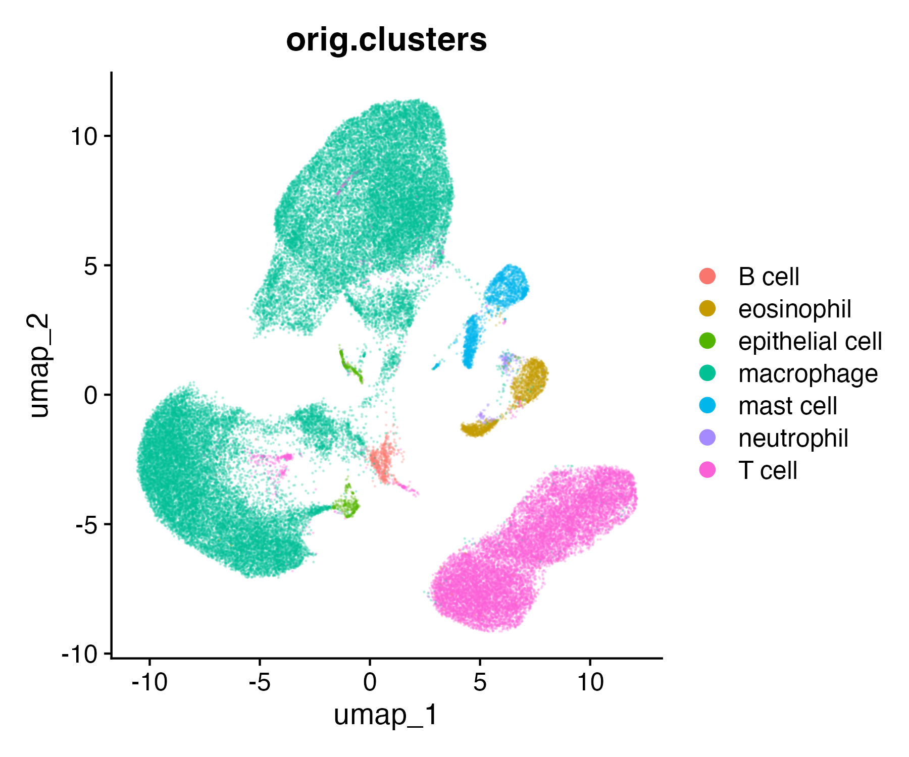
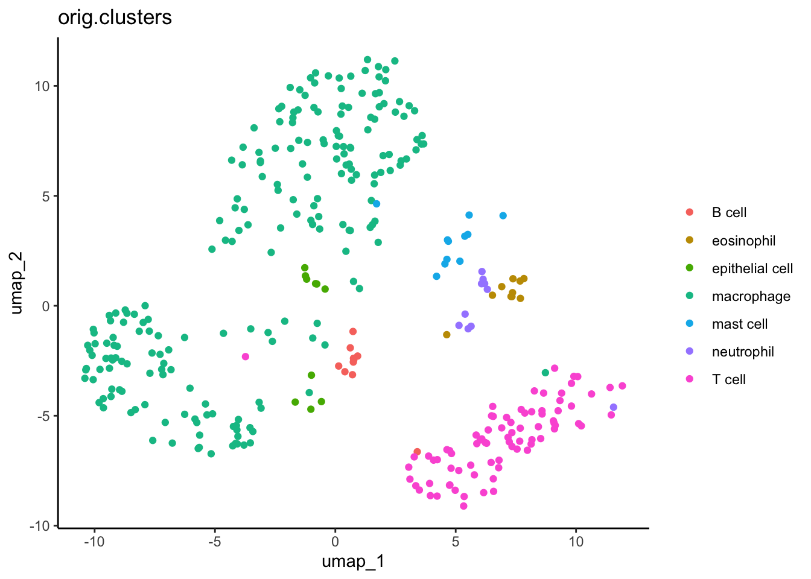
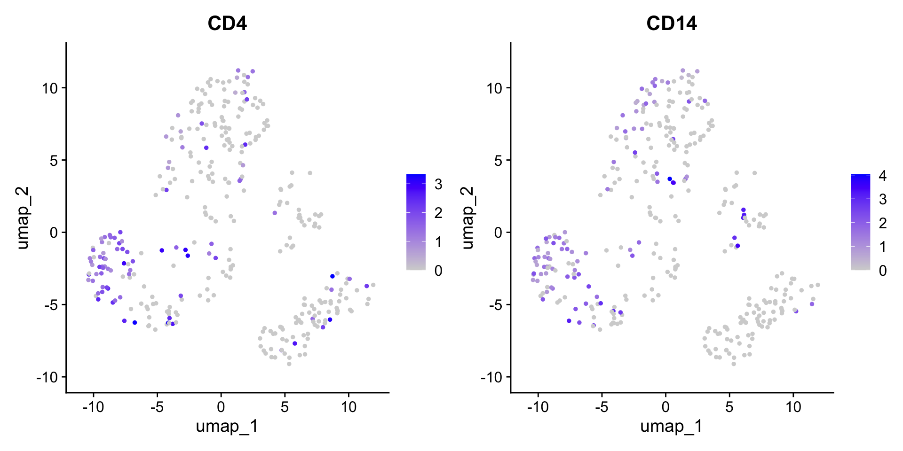
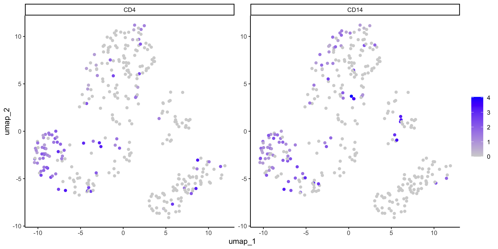
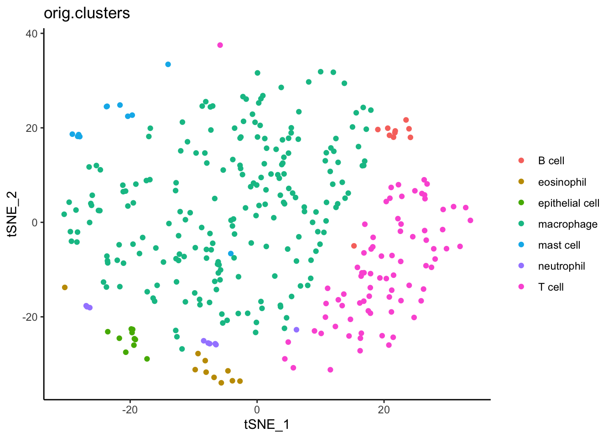

── Attaching core tidyverse packages ──────────────────────── tidyverse 2.0.0 ──
✔ dplyr 1.1.3 ✔ readr 2.1.4
✔ forcats 1.0.0 ✔ stringr 1.5.1
✔ ggplot2 3.4.4 ✔ tibble 3.2.1
✔ lubridate 1.9.3 ✔ tidyr 1.3.0
✔ purrr 1.0.2
── Conflicts ────────────────────────────────────────── tidyverse_conflicts() ──
✖ dplyr::filter() masks stats::filter()
✖ dplyr::lag() masks stats::lag()
ℹ Use the conflicted package (<http://conflicted.r-lib.org/>) to force all conflicts to become errors
library(Seurat)
Loading required package: SeuratObject
Loading required package: sp
Attaching package: 'SeuratObject'
The following object is masked from 'package:base':
intersect
Data
Data description
We will continue using data from
Darrah PA et al. Airway T-cells are a correlate of i.v. Bacille Calmette-Guerin-mediated protection against tuberculosis in rhesus macaques. Cell Host Microbe. 2023 Jun 14;31(6):962-977.e8. doi: 10.1016/j.chom.2023.05.006. PMID: 37267955; PMCID: PMC10355173.
These data are contained in a Seurat object, which is a complex S3+S4 data type. This means that some aspects are accessed with $ and some with @. If you work entirely in Seurat, you will likely be able to avoid trying to find specific pieces. In this tutorial, we do pull out some data to use in ggplot2 to give you an idea of where things are located. To explore more, you can look at the object’s structure.
str(dat_sc)
Ordination
Ordination simplifies the multi-dimensional gene expression data to a small number of latent variables that can be plotted on a simple XY plane. You may be familiar with principle component analysis (PCA) which is linear ordination. Single cell data performs better with non-linear ordinations like those described below.
In our ordination plots, we will color cell type clusters previously described in the publication as well as some genes of interest.
UMAP
Uniform Manifold Approximation and Projection (UMAP) is one possible non-linear ordination. We, unfortunately, don’t have time to go into the math but you can learn more in McInnes et al.
If you were analyzing these data de novo, you would run a UMAP in Seurat with the following. However, because we are using a small subset of the data, we are going to use a previously calculated UMAP that was made with all of the data.
If you accidentally run this code, simply reload the original data as above.
# DO NOT RUNdat_sc <-RunUMAP(dat_sc, dims =1:10)
Seurat can quickly plot the UMAP results with DimPlot.
Comparing our UMAP to the original UMAP using all cells, we see representatives of all cell types but many fewer cells overall.

Next, we can re-capitulate this plot in ggplot2. We do some data wrangling in the tidyverse to extract and format all the data we need. See the other workshops at the end of this document to learn more about the tidyverse.
#Extract the XY values for UMPumap_xy <-as.data.frame(dat_sc[["umap"]]@cell.embeddings)#Add cell cluster informationcell_clusters <-as.data.frame(dat_sc$orig.clusters)#Combineumap_xy_clusters <- umap_xy %>%#move rownames to data columnrownames_to_column("cell") %>%#merge with cluster infofull_join( cell_clusters %>%rownames_to_column("cell") ) %>%#clean column namesrename(ident =`dat_sc$orig.clusters`)
ggplot(data = umap_xy_clusters) +aes(x = umap_1, y = umap_2) +geom_point() +aes(color = ident) +labs(title ="orig.clusters", color ="") +theme_classic()

Why does it look different than the publication?
You may note that this UMAP looks different than the one in the publication. This is because the authors did not provide in-depth methods, so our parameters likely differ somewhat. We are, however, using the actual cell type annotations determined by the original others
Error with UMAP
Sometimes UMAP is not automatically installed with Seurat. If you get an error when you run UMAP in the future, try unloading the package, installing UMAP, and re-loading the package.
We can plot gene expression per cell on the ordination. In Seurat, you list the gene(s) (i.e. features) and it does so with FeaturePlot. Feel free to try other genes!
FeaturePlot(dat_sc, reduction ="umap", features =c("CD4", "CD14"))

Or we can extract and manipulate the dat_sc data to make a similar plot ourselves.
#Define gene of interestgenes_of_interest <-c("CD4", "CD14")#Extract normalized gene expression datadat_sc_counts <-as.data.frame(GetAssayData(object = dat_sc, layer ="data"))#Filter for gene of interestumap_xy_expression <- dat_sc_counts %>%rownames_to_column("gene") %>%filter(gene %in% genes_of_interest) %>%#long formatpivot_longer(-gene, names_to ="cell") %>%#combine with UMAP datafull_join(umap_xy_clusters) %>%mutate(gene =factor(gene, levels=c("CD4","CD14")))
ggplot(data = umap_xy_expression) +aes(x = umap_1, y = umap_2) +geom_point() +aes(color = value) +#Color by expressionscale_color_gradient(low ="lightgrey", high ="blue") +#Change colorsfacet_wrap(~ gene, scales ="free") +#Split by genelabs(color ="") +theme_classic()

Note that the ggplot2 version has a single color scale across all facets of the plot. This is helpful in cases where the ranges of gene expression are similar (like here) but can mask differences if scales are wildly different. If you want two separate scales, we recommend making two separate ggplots.
tSNE
Similarly, we can use the tSNE algorithm to plot these data in Seurat. Again, you do not need to recalculate tSNE. One made from the full data set is already provided.
#Extract the XY values for UMPtsne_xy <-as.data.frame(dat_sc[["tsne"]]@cell.embeddings)#Use the same cell clusters as UMAP#Combinetsne_xy_clusters <- tsne_xy %>%#move rownames to data columnrownames_to_column("cell") %>%#merge with cluster infofull_join( cell_clusters %>%rownames_to_column("cell") ) %>%#clean column namesrename(ident =`dat_sc$orig.clusters`)
ggplot(data = tsne_xy_clusters) +aes(x = tSNE_1, y = tSNE_2) +geom_point() +aes(color = ident) +labs(title ="orig.clusters", color ="") +theme_classic()

Analyses with ordinations
Now that we have an ordination, what biological questions can it help to answer? One of the main purposes has already been done i.e cell type assignment. However, there is still more to explore! Some ideas are below.
Cell type recruitment/abundance: Comparing Media and Mtb samples, you can ask how many of each cell type are present. While not ordination specific, this analysis can be nicely visualized in ordinations colored by cell type. Be sure to normalize to total cells per sample before statistics.
More specific cell assignment: You can explore specific marker genes to determine more specific cell annotations like M0 vs M1 macrophages, helper vs cytotoxic T-cells, etc.
Differential expression: You can compare expression between cell types or within the same cell type between different groups like Media vs Mtb. This can be done with pseudo bulk data like in the first part of this tutorial or with individual cells which increases statistical power. Again, the later can be visualized in ordinations.